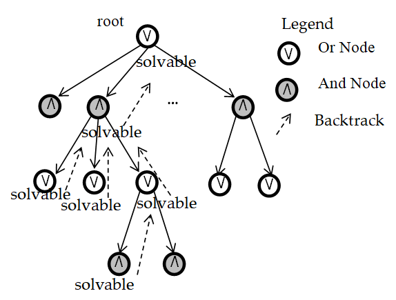
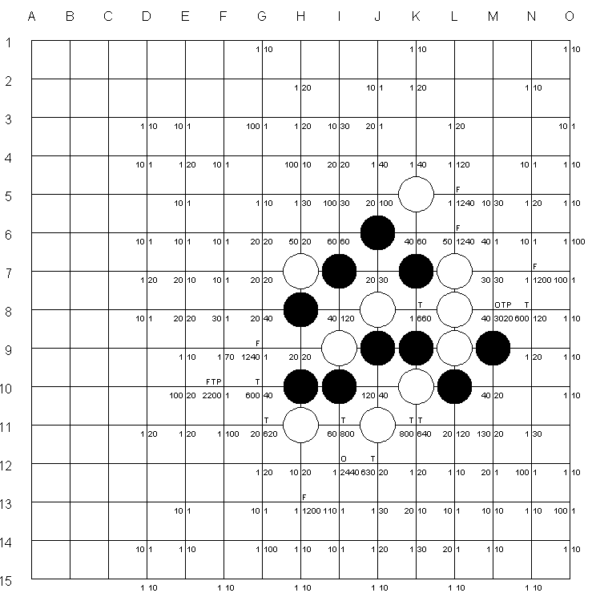

作者：赵志崑
寻找VCT采用与或树搜索算法。以当前盘面为树的根节点，然后不断对树进行扩展，直到找到VCT或者达到结束条件（树的层数、节点数、用时等限制）。每次扩展对一个叶节点进行，对该盘面的每个有价值的走法生成一个子节点。
该进攻方走子的节点为或节点，该防守方走子的节点为与节点。通常进攻方采用进攻走法，防守方采用防守走法，但防守方也有反击走法，例如进攻方“活三”进攻时防守方可以采用“四”来反击。
一个节点有三种状态：可解、不可解、未知。节点状态由以下规则决定：
因为节点状态与子节点有关，所以当一个节点状态发生改变时，需要更新其父节点状态。这是一个回溯过程，可能会一直更新到根节点。如果根节点状态变为可解，说明发现了VCT。相反，如果根节点状态变为不可解，说明没有VCT。
能够推导出根节点可解的所有节点构成一棵树，即解树。
为了找出有价值的走法（扩展树时使用），需要将一个盘面上可能的走法进行分类。本算法将走法分为：连五、活四、冲四、活三、冲四应手、活三应手、禁手。再进一步标记出可致胜走法，包括四三、三三、强制禁手。黑白双方的走法需要分别分类标记出来。
一个盘面通常有多个走法可选，为了确定优先选择哪个走法，本算法为每种走法评分。评分采用静态评分表，进攻性越强的走法分数越高。比如，冲四比活三分数高。一个点的评分是它在四个方向上所属的各种走法的评分之和。与分类类似，黑白双方的评分需要分别计算。
下图是一个例子，棋盘上有价值的走子点的分类和评分都标出来了。左上角是黑方走法分类，左下角是黑方评分；右上和右下是白方走法分类和评分。F10点的黑方走法标记为FTP，即冲四-活三-可致胜，评分为2200；其白方走法不属于任何分类，评分为最小的1。I12对白方标记为O，即活四，评分为2440，因为它还和H11构成连二；但对黑方不属于任何走法分类，评分为1。
在走法分类与评分的基础上，可以为一个盘面生成有价值（对VCT来说）的走法。
第一，如果有的话先走连五，因为可以立即获胜。第二，阻止对方连五。第三，如果对方有可致胜点，己方可选择防守（走阻止对方致胜的点）或进攻（但只能选冲四或活四）。第四，如果对方没有可致胜点，己方可用所有走法进攻。第五，黑方的禁手应去掉。
扩展与或树可以采用多种策略，例如：深度优先、宽度优先、最佳优先。深度优先策略一个分支一个分支地搜索，宽度优先策略一层一层地搜索，最佳优先策略优先搜索找到结果的希望值最大的节点。
最佳优先策略中，希望值由一个评估函数计算。该函数设计时主要考虑几个方面。第一，为了优先处理距离根节点近的节点，希望值应随着层数增大而减小。第二，攻击性强的走法产生的节点希望值比攻击性弱的走法大。第三，一个与节点的可解分支越多，希望值越大。
可以采用转移、剪枝、预判等方法来提高搜索效率。
转移的意思是合并不同走法序列得到的相同的盘面。在扩展树时，生成一个新盘面后，需要先检查树中是否已经存在相同的盘面。如果存在，则直接连接到该节点，这样树形结构实际上会变为有向图。判断两个盘面是否相同可以采用Zobrist哈希法，效率最高。
剪枝可以避免搜索无用分支。可以剪掉的分支包括：可解或节点的非可解分支，不可解与节点的非不可解分支。
预判可以提前2-4步得到结果，从而减少2-4层的搜索。预判规则包括：